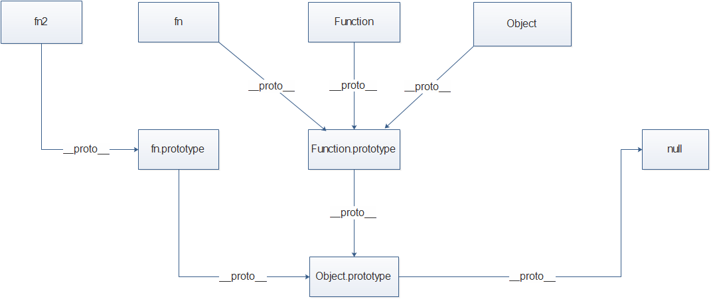

prototype:
__proto__: 引用类型的__proto__属性是浏览器给他们添加的一个自定义属性，属性值也是一个普通对象。引用类型的__proto__属性指向它们的构造函数的prototype属性。对象所独有的。
constructor: 是一个构造函数，是一种特殊的method。在生成prototype时自动生成的属性，其指向函数本身（在申明函数时，js自动创建该函数的peototype属性）。在用new给一个类创建对象的时候会自动调用该类的构造函数。对象所独有的。
let fn = function() {}
let fn2 = new fn()关系图解：
prototype
任何函数（箭头函数除外）都具有一个 prototype属性
__proto__
一个对象的__proto__指向产生它的类的prototype。function声明的变量的__proto__指向Function的prototype，其它对象的__proto__指向Object的prototype。每个函数的prototype是一个对象，prototype的__proto__指向一定是Object.prototype。
特殊的Function跟Object
Function:
从控制台分别打印Function的prototype跟__proto__，可以明显的看出来Function的__proto__指向了自己的prototype。
Object:
如上图，Object与Function的__proto__的指向是相同的，都是指向了Function的prototype。
如上图，Object的proptotype又有些不同，没有灰色的<prototype>，在控制台中也可以清楚的看到Object的__proto__指向了null，也可以讲Object.prototype看作为一切之源。

Object的prototype称为源型，将图逆推，
所有通过这个源型创造出的都是object，第一步先创造出Function的prototype，因此这个prototype的__proto__指向源型，然后再通过这个prototype造出Function，因此Function的__proto__指向它自己的prototype，然后用Function造出Object，因此Object的__proto__指向Function的prototype。
peototype是原型，__proto__所指向的以及其后的所有peototype称为原型链。
constructor
对象独有的，它是从一个对象指向一个函数，含义就是指向该对象的构造函数。
根据上文逆推的结论：所有函数和对象最终都是由Function构造函数得来，所以constructor属性的终点就是Function这个函数。
当一个对象不具备constructor时会沿着__proto__到原型链中去找。
总结
感谢两篇博文，内容主要参考博文：https://blog.csdn.net/cc18868876837/article/details/81211729#4_constructor_20，https://blog.csdn.net/backee/article/details/83378772